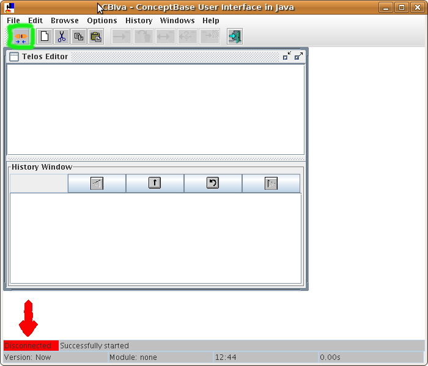
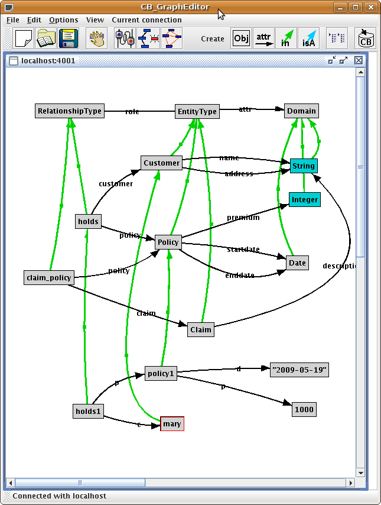
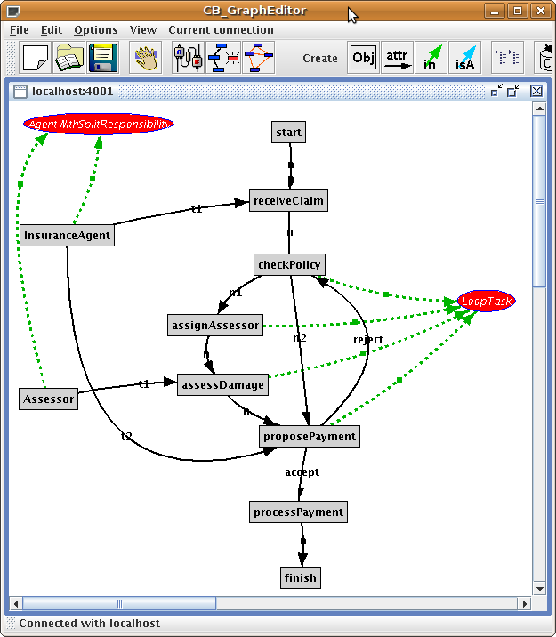

| Figure 2: Graphical display of the ER language |
ConceptBase Tutorial II: Metamodeling
Manfred Jeusfeld |
This tutorial extends the first tutorial by examples on metamodeling, i.e. to scenarios where you define objects, classes, and meta classes. Metamodeling is particularily useful in situations where you need to define your own modeling languages (domain-specific languages). You will see that you can use the ConceptBase query language to analyze the models created in your dedicated modeling languages and that it is rather easy to define simple modeling languages. Solutions to the exercises are at the end of this tutorial.
We start with a simple version of entity-relationship diagrams. First, we will define entity types and relationship types (meta classes). Then, define an example entity-relationship diagram (classes) plus some example data (objects).
In the next part, we add a simple process language to the existing entity-relationship language. We are interested in analyzing process models. In particular, we want to check whether one agent is responsible for two tasks t1 and t2, and there is a task t on the path between t1 and t2 that is assigned to another agent.
There are several methods to start the ConceptBase server and its user interface CBIva. We decide for the simplest way: start the ConceptBase server from within CBIva. So, switch to the directory to which ConceptBase is installed on your computer and start the ConceptBase.cc user interface CBiva:
cbiva
On Windows and Mac OS-X you can also start CBIva by double-clicking on the command file cbiva[.bat] in the directory where you installed ConceptBase.

Figure 1: CBIva just after starting it
Figure 1 shows the CBIva window just after starting it. If the indicator on the buttom left corner is green and has the label "Connected", then your CBIva client is auto-connected to a ConceptBase server. If it is red and displays "Disconnected", then the CBIva is not yet connected to a ConceptBase server. Press the "connect" icon just below the "File" menu in such cases to start/connect to a local ConceptBase server.
EntityType end
RelationshipType with
attribute
role: EntityType
end
Enter the definitions into the Telos Editor window and store them to the ConceptBase server with the "Tell" function.
EntityType with
attribute
attr: Domain
end
Domain end
This provides us with a very simple entity-relationship language. It just allows to define entity types with attributes, and relationship types with role links. Entity attributes are restristed to domains. So we need to specify the allowed domains.
Integer in Domain end String in Domain end
The classes Integer and String are predefined in ConceptBase. Any integer number occurring in an object definition will automatically be an instance of Integer. Likewise any double-quoted string will be regarded as an instance of String.
Date in Domain end "2009-05-19" in Date end "2001-01-01" in Date end
The object Date is not predefined in ConceptBase. Hence, we need to take care ourselves about the set of possible values (=instances of Date).
After these exercises, you can visualize the current state with the graph editor. User RelationshipType as start object. The graph editor is started from CBIva via the menu item "Browse / Graph Editor". Expand the outgoing attributes of RelationshipType (right mouse button) and select "Show all". Do the same with EntityType. For Domain, show the instances. For Date, show the instances as well.
Figure 2: Graphical display of the ER language
The graph window shows already three abstraction levels: the objects "2009-05-19" and "2001-01-01" are at the lowest abstraction level (data level). The objects Date, Integer, and String are classes (model level), and the objects RelationshipType, EntityType, and Domain are meta classes (notation level).
Customer in EntityType with
attr
name: String;
address: String
end
Policy in EntityType with
attr
startdate: Date;
enddate: Date;
premium: Integer
end
holds in RelationshipType with
role
customer: Customer;
policy: Policy
end
Claim in EntityType with
attr
description: String
end
claim_policy in RelationshipType with
role
claim: Claim;
policy: Policy
end
Figure 3 graphically displays the insurance model. ConceptBase can also assign dedicated graphical symbols to certain objects, e.g. diamond shapes to relationship types. We skip this feature in this tutorial and refer you to the user manual for more details on this.
The green links are instantiations. Hence the insurance model is one abstraction level below the ER language.
Figure 3: The insurance model as instantiation of the ER language
mary in Customer end policy1 in Policy with startdate d: "2009-05-19" premium p: 1000 end holds1 in holds with customer c: mary policy p: policy1 end

Figure 4: Sample data for the insurance model
The display of the data objects in figure 4 completes all three abstraction levels (meta classes, classes, data objects).
Process models can be used to denote workflows, business processes, and algorithms. We are in particular interested in a process modeling notation that allows us to analyze process models for certain patterns. Before we start defining the notation, we define the transitivity construct that shall be useful subsequently for defining the pattern.
Proposition in Class with
attribute
transitive: Proposition
rule
trans_R: $ forall x,y,z,R/VAR
AC/Proposition!transitive C/Proposition
P(AC,C,R,C) and (x in C) and (y in C) and (z in C) and
A_e(x,R,y) and (y R z) ==> (x R z) $
end
The predicate A_e(x,R,y) is true if there is an explicit attribute between objects x and y that has the category R.
Task with
attribute,transitive
successor: Task
end
Agent with
attribute
executes: Task
end
The process modeling notation is very simple but it has the ability to represent very complex workflows. Let now distinguish start statements and predicate statements.
StartStatement in QueryClass isA Task with
constraint
c1: $ not exists t/Task (t successor this) $
end
PredicateTask in QueryClass isA Task with
constraint
c1: $ exists s1,s2/Task A_e(this,successor,s1) and
A_e(this,successor,s2) and (s1 \= s2) $
end
You can define end statements in a similar way. A more tricky concept is the following.
LoopTaskOf in GenericQueryClass isA Task with
parameter
rep: Task
constraint
c: $ (this successor rep) and (rep successor this) and
(exists s/Task A_e(rep,successor,s) and (s successor rep)) $
end
LoopTask in QueryClass isA LoopTaskOf
end
The parameter rep in the first query stands a representative of a loop. Note that
there may be many loops inside a process model and we would like to be able to query,
which tasks belong to the same loop. The second query just returns all loop statements regardless
of the representative. It is sufficient to leave out a value for parameter rep in this case.
There can be several loops inside a process model. Loops can also be nested, i.e. a task can be member of several loops. Note that the regular attribution predicate (t1 successor t2) is closed under transitivity!
Now that we have defined loops, let us tackle the pattern "agent with split responsibility".
AgentWithSplitResponsibility in QueryClass isA Agent with
constraint
c1: $ exists t1,t2,t/Task a/Agent (this executes t1) and
(this executes t2) and (t1 successor t) and
(t successor t2) and (a executes t) and (a \= this)$
end
The condition (a \= this) makes sure that the middle task t is
executed by a different agent.
Recall the insurance scenario. Now we need to represent a workflow in this domain with our newly defined process modeing notation.
start in Task with
successor
n: receiveClaim
end
receiveClaim in Task with
successor
n: checkPolicy
end
checkPolicy in Task with
successor
n1: assignAssessor;
n2: proposePayment
end
assignAssessor in Task with
successor
n: assessDamage
end
assessDamage in Task with
successor
n: proposePayment
end
proposePayment in Task with
successor
accept: processPayment;
reject: checkPolicy
end
processPayment in Task with
successor
n: finish
end
finish in Task end
Assessor in Agent with
executes
t1: assessDamage
end
InsuranceAgent in Agent with
executes
t1: receiveClaim;
t2: proposePayment
end
The answer to LoopTask is checkPolicy, assignAssessor, assessDamage, proposePayment. The answer to AgentWithSplitResponsibility is InsuranceAgent, Assessor. Note that the task assessDamage is in a loop with proposePayment. Hence, a sequence assessDamage-proposePayment-checkPolicy-assignAssessor-assessDamage is possible and is the reason to classify both agents into the query class AgentWithSplitResponsibility.
You can also visualize the results of the queries by the graph editor. The example process model together with the classification to the two query classes is shown in figure 5.

Figure 5: Classifying a process model via query classes
The dotted green links are derived instantiations. So, an object that is in the answer set of a query class is regarded as a derived instance of that query class. Indeed, query classes are classes where the instances are derived via the membership condition of the query class.
We have created two simple notations, one for data modeling and the scond for process modeling. Now let us combine these two. The most natural way appears to regard object types (entity types and relationship types) as possible inputs and outputs of tasks in a process model.
ObjectType end EntityType isA ObjectType end RelationshipType isA ObjectType end
So, this was easy. We now can link the two notations via ObjectType.
Task with
attribute
input: ObjectType;
output: ObjectType
end
Attributes in ConceptBase are by default multi-valued, ie. they can have zero, one or many values. This is exaclty what we want in this case.
We finalize this tutorial by attaching some objects types as input/output of tasks.
receiveClaim with output o1: Claim end checkPolicy with input i1: claim_policy end
In this tutorial, we defined two simple notations, one for data modeling, another for process modeling. We defined queries to analyze process models for non-trivial patterns, building on a newly defined construct for transitivity. We created example models for both notations. Finally, we linked the two notations to form an integrated method for data and process modeling.
The two notations were both very simple. For example, the ER notation lacks cardinalities of role links. The process modeling notation cannot represent parallel splits. Adding the missing construct would not require too much effort. The interested reader is referred to the CB-Forum (http://conceptbase.sourceforge.net/CB-Forum.html) for extended examples.
This document was translated from LATEX by HEVEA.